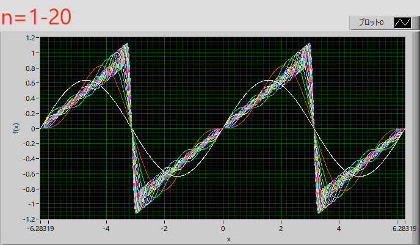

フーリエ級数展開-15
ここで，三角関数を用いて解いたノコギリ波を複素数表示で解いてみましょう．
・ノコギリ波
ノコギリ波，
\( \Large \displaystyle f(x) = \frac{x}{ \pi} \hspace{20pt} ( - \pi \leq x < \pi) \)
の場合を考えます．
フーリエ級数展開は，
\( \Large \displaystyle f(x) = \sum_{n= - \infty}^{ \infty} C_{n} \cdot e^{i \frac{ n \pi}{L}x } \)
\( \Large \displaystyle C_n = \frac{1}{2L} \int_{ - L}^{ L} f(x) \ \displaystyle e^{- i \frac{ n \pi}{L}x } \ dx \)
となり，積分範囲から，L＝ π，となるので，
\( \Large \displaystyle f(x) = \sum_{n= - \infty}^{ \infty} C_{n} \cdot e^{i n x } \)
\( \Large \displaystyle C_n = \frac{1}{2 \pi} \int_{ - \pi}^{ \pi} f(x) \ \displaystyle e^{- i n x} \ dx \)
となります．
n=0，の場合は，
\( \Large \displaystyle C_0 = \frac{1}{2 \pi } \int_{ - \pi}^{ \pi} f(x) \ dx
= \frac{1}{2 \pi} \int_{ - \pi}^{ \pi} \frac{x}{\pi} \ dx = \frac{1}{2 \pi^2} \int_{ - \pi}^{ \pi} x \ dx \)
\( \Large \displaystyle
= \frac{1}{2 \pi^2 } \left[ \frac{1}{2} x^2 \right]_{- \pi}^{\pi}
=
\frac{1}{2 \pi^2 } \left[ \frac{ \pi^2}{2} - \frac{(- \pi)^2}{2} \right] = 0 \)
n≠0，の場合は，
\( \Large \displaystyle C_n = \frac{1}{2 \pi } \int_{ - \pi}^{ \pi} f(x) \cdot e^{-i n x }\ dx
= \frac{1}{2 \pi} \int_{ - \pi}^{ \pi} \frac{x}{\pi} \cdot e^{-i n x } \ dx
= \frac{1}{2 \pi^2} \int_{ - \pi}^{ \pi} x \ e^{-i n x } \ dx \)
これは，ここ，で説明した，瞬間部分積分，を使えば簡単に解け，
\( \Large \displaystyle \int x \ e^{ -inx} \ dx \)
を考えていきます．瞬間部分積分を使えば，
| + | x | \( \Large \displaystyle -\frac{1}{in} e^{-inx} \) |
| - | 1 | \( \Large \displaystyle \left(-\frac{1}{in} \right) \left(-\frac{1}{in} \right) e^{-inx} = - \frac{1}{n^2} e^{-inx} \) |
\( \Large \displaystyle \int x \ e^{ -inx} \ dx = - \frac{1}{in} x \ e^{-inx} + \frac{1}{n^2} e^{-inx} + C \)
となります．したがって，
\( \Large \displaystyle C_n = \frac{1}{2 \pi^2} \int_0^{ \pi} x \ e^{ -inx} \ dx = \frac{1}{2 \pi^2} \left[ -\frac{1}{in} x \ e^{-inx} + \frac{1}{n^2} e^{-inx} \right]_{- \pi}^{\pi} \)
\( \Large \displaystyle = \frac{1}{2 \pi^2} \left[ \left( - \frac{ \pi}{in} \ e^{in \pi} + \frac{1}{n^2} e^{in \pi} \right) - \left( \frac{ \pi}{in} \ e^{in \pi} - \frac{1}{n^2} e^{in \pi} \right) \right] \)
\( \Large \displaystyle = \frac{1}{2 \pi^2} \left[ - \frac{ \pi}{in}\left( \ e^{-in \pi} + e^{in \pi} \right) - \frac{1}{n^2} \left( e^{-in \pi} - e^{in \pi} \right) \right] \)
\( \Large \displaystyle = \frac{1}{2 \pi^2} \left[ - \frac{ \pi}{in} \ 2 \ cos (n \pi) - \frac{1}{n^2} \ 2i \ sin \ (n \pi) \right] \)
\( \Large \displaystyle = - \frac{ 1}{in \pi} \ cos (n \pi) \)
\( \Large \displaystyle = - \frac{ 1}{in \pi} \ ( -1)^n \)
\( \Large \displaystyle = \frac{ i}{n \pi} \ ( -1)^n \)
したがって，
\( \Large \displaystyle f(x) = \sum_{n= - \infty}^{ \infty} C_{n} \cdot e^{i n x } = \sum_{n=1}^{ \infty} ( C_{-n} \cdot e^{-i n x } + C_{n} \cdot e^{i n x })\)
となることは前ページに記載しました(C0は０です）
第二項，第三項はそれぞれ，オイラーの公式から，
\( \Large \displaystyle C_{n} \cdot e^{i n x } = \frac{i}{ n \pi} (-1)^n \{ cos (nx) + i \ sin (nx) \} \)
\( \Large \displaystyle C_{-n} \cdot e^{-i n x } = -\frac{1}{ n \pi } (-1)^n \{ cos (nx) - i \ sin (nx) \} \)
となるので，
\( \Large \displaystyle C_{n} \cdot e^{i n x } + C_{-n} \cdot e^{-i n x } = \frac{i}{n \pi} (-1)^n \left[ \{ cos (nx) + i \ sin (nx) \} - \{cos (nx) - i \ sin (nx) \} \right] \)
\( \Large \displaystyle = \frac{i}{ n \pi } (-1)^n \left\{ \ 2i \ sin (nx) \right\} \)
\( \Large \displaystyle = -\frac{2}{ \pi } (-1)^n \frac{sin (nx)}{n} \)
となりますので，
\( \Large \displaystyle f(x) = C_0 + \sum_{n=1, odd}^{ \infty} ( C_{-n} \cdot e^{-i n x } + C_{n} \cdot e^{i n x }) \)
\( \Large \displaystyle= \sum_{n=1}^{ \infty} \left\{ -\frac{2}{ \pi } (-1)^n \frac{sin (nx)}{n} \right\} \)
\( \Large \displaystyle= \frac{2}{ \pi} \left( sin \ \pi x - \frac{1}{2} sin \ 2x + \frac{1}{3} sin \ 3x + ........... \right) \)

と，ノコギリ関数の場合，と同じ結果となります．
最後は，x2，の波形です．